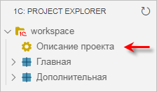
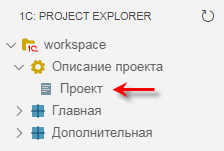

Обновление данных приложения для новой версии проекта
В процессе развития проекта возникают ситуации, когда при переходе на новую версию проекта нужно обновить данные, которые содержатся в приложении.
Например, в предыдущей версии в справочнике Заявки в реквизите АвторРешения сохранялась ссылка на сотрудника, который принял решение по данной заявке. Но выяснилось, что после удаления сотрудников из приложения исчезает и информация о том, какой именно сотрудник принимал решение по данной заявке, что нехорошо.
Поэтому в новой версии разработчики добавили в этот справочник еще один реквизит — АвторРешенияСтрокой типа Строка. Теперь, чтобы существующие данные приложения адаптировать к новой логике, нужно обойти все заявки и в новый реквизит АвторРешенияСтрокой записать ФИО того сотрудника, который указан в реквизите АвторРешения.
Другой пример — когда приложение содержит какие-то стандартные классификаторы, которые обновляются со временем. При переходе на новую версию проекта нужно обновить тот классификатор, который уже используется в приложении.
Для решения подобных задач предназначен элемент проекта вида Проект и событие ПриОбновлении, которое вы можете обработать в модуле проекта.
Элемент проекта вида «Проект»
Элемент Проект описывает все приложение в целом. «1С:Кабинет сотрудника» автоматически создает такой элемент в новом проекте. Он расположен в самом верху проекта.

Тип «Проект»
Для проекта целиком «1С:Кабинет сотрудника» создает один тип встроенного языка — Проект. Этот тип доступен и на сервере и на клиенте.
Этот тип не имеет конструктора и имеет единственный объект, который доступен как свойство глобального контекста:
// Получить менеджера проекта
пер МенеджерПроекта = ПроектМодуль проекта
В проекте модуль, расширяющий тип Проект, называется модулем проекта. Он исполняется на сервере.

В этом модуле вы можете обработать событие ПриОбновлении для того, чтобы существующие пользовательские данные адаптировать к логике новой версии приложения.
Например, возвращаясь к примерам в начале, вы можете обойти все заявки и в новый реквизит АвторРешенияСтрокой записать ФИО того сотрудника, который указан в реквизите АвторРешения или можете дописать в классификатор новые данные.
«1С:Кабинет сотрудника» вызывает событие ПриОбновлении не при каждом запуске приложения, а только в том случае, если значение свойства проекта Версия отличается от того, которое было у предыдущей работающей версии проекта.
В обработчик этого события «1С:Кабинет сотрудника» передает номер версии проекта до обновления или Неопределено, если предыдущей версии проекта не существует. Проанализировав этот номер вы можете принять решение о необходимости обновления данных. Например:
метод ПриОбновлении(ПредыдущаяВерсия: Версия?)
если ПредыдущаяВерсия < Версия{2.0}
// Обновить до версии 2.0
...
;
;Этот обработчик исполняется в режиме без проверок прав доступа и все подсистемы считаются используемыми.
Во время работы этого обработчика у объектов типов <ИмяСправочника>, <ИмяHttpСервиса>, <ИмяКлассаКлючейДоступа> и <ИмяРегистраСведений> «1С:Кабинет сотрудника» отключает вызов обработчиков всех событий кроме событий вычисления дескрипторов доступа и ключей доступа. События вычисления дескрипторов и ключей «1С:Кабинет сотрудника» вызовет не в момент записи элементов данных, а отложенно, после того, как завершится обработчик ПриОбновлении, но до того, как будет завершено обновление приложения.
Свойства элемента проекта вида «Проект»
- Версия
- Версия проекта. Во время работы приложения «1С:Кабинет сотрудника» отображает ее в диалоге О
приложенииТип Версия
- Название
- Название проекта, понятное пользователю. Во время работы приложения «1С:Кабинет сотрудника» отображает его в
диалоге О приложенииОбязательное, тип Строка, не более 200 знаков
- ОбновлениеСВерсии
- Минимальная версия, с которой можно применить обновление на текущий проект. Значение ОбновлениеСВерсии
должно быть не больше, чем значение ВерсияТип Версия
- Разработчик
- Название фирмы-разработчика проекта. Во время работы приложения «1С:Кабинет сотрудника» отображает его в диалоге
О приложенииТип Строка, не более 200 знаков